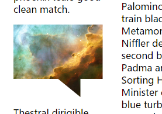
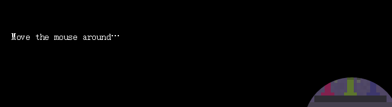
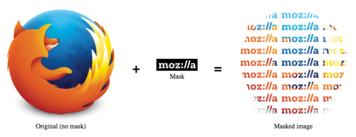

本文为原文CSS Shapes, clipping and masking – and how to use them翻译
Firefox 54版本的release引入了一个新特性，那就是支持了CSS属性：clip-path。
clip-path是一个允许我们剪切元素的部分内容的一个属性，现在在Firefox还只能使用SVG去剪裁一个元素。
但是如果是使用Firefox54版本的话，你就能使用各种CSS shapes了，那是哪些呢？就是insets, circles, ellipses 还有 polygons. （这些算是术语(term)就不翻译了）
注意：如果想查看原文的codepen demos，就点击原文去看吧
基本使用
非常值得注意的是clip-path不能接受”img”作为一个输入，必须将它转为一个<clipPath>元素<img src="https://hacks.mozilla.org/files/2017/06/omega.jpg" alt="Omega nebula" height="200">
<svg width="0" height="0">
<defs>
<clipPath id="mask">
<path d="M 40 0 L 0 40, 60 100, 0 160, 40 200, 100 140, 160 200, 200 160, 140 100, 200 40, 160 0, 100 60">
</clipPath>
</defs>
</svg>
img { |
有个很酷的事情是我们可以在<clipPath>中包含一个SVG动画
<img src="https://hacks.mozilla.org/files/2017/06/omega_large.jpg"> |
body { |
还有，在即将发布的Firefox中，我们还会有CSS shape funcitons。这让我们可以用CSS定义图形而不需要SVG，shape functions包含circle , ellipse, inset 和 polygon. 你可以看下面这个例子：
<img src="https://hacks.mozilla.org/files/2017/06/omega.jpg" class="circle"> |
.circle { |
不止与此，我们还可以用CSS让它动起来，唯一的限制是我们不能改变function的类型（比如从一个circle变为inset），并且当给一个多边形增加动画的时候，一个多边形必须在动画中保留相同数量的顶点。
这是一个简单的运用circle的动画效果
这是另一个利用polygon的效果，注意：尽管我们受限于多边形顶点不能发生变化，我们仍然可以通过重复的定位值合并它们，这样就能够创建一个能够变化边数的多边形了。
另外，clip-path也同样开启了一个新的智能布局模式。下面的demo使用了剪裁效果来使一个图片插入文章并产生一个有趣的特效

用JavaScript去play
剪裁效果让我们有了各种新的可能，clip-path可以用来分离界面的不同元素。可以使用JavaScript来获取元素并且计算元素和容器的距离，然后使用距离来更新inset姓张的参数。
我们同样可以根据用户的输入来动态改变剪裁效果，比如下面这个由鼠标控制的潜望镜效果：

#clip-path或者mask？
还有个相似的CSS属性叫做mask，但它和clip-path不太相同，根据你使用方式的不同，你应该选择其中一种，同样你也要考虑浏览器兼容性。目前Firefox是惟一一个完全支持mask特性的，所以下面的demo你需要运行Firefox54来运行。（译注：目前Chrome可以通过添加webkit前缀去运行）
蒙版可以在SVG中使用一个图像或者<mask>元素。clip-path则是使用一个SVG路径或者CSS图形。
蒙版改变一个元素的外观，比如给一个图片添加一个线性渐变的圆形蒙版。
记住你还可以使用mask-mode用bitmap图像作为，尽管他们没有alpha通道（即透明度）。

蒙版的一个重要概念是它会改变图像的像素的值，在一些点上会让它完全透明。
另一个重要的不同是，剪裁会切下一块元素，包括相交的那一部分，看下面这个demo图就知道了，蒙版会让整个矩形都会发生事件，但是使用剪裁只有可见的部分会发生事件。
所以要根据使用的实际情况不同来考虑使用哪种属性。